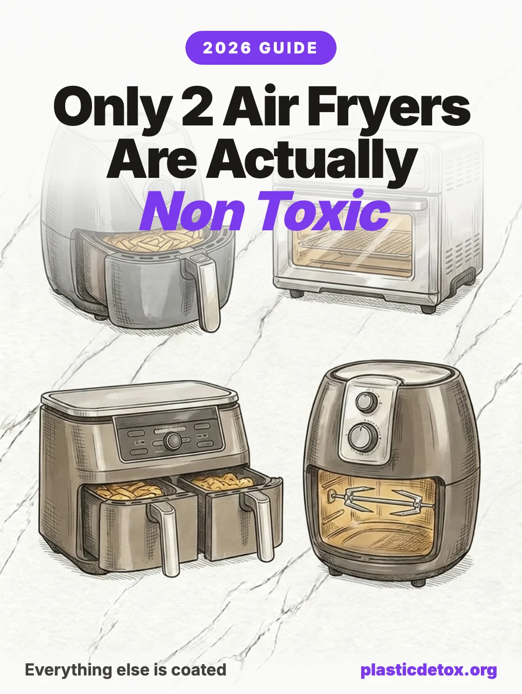

Best Non Toxic Air Fryers: The Genuinely PFAS Free Picks for 2026

The 30 Second Summary
- Let us be upfront: only two air fryers on the market meet our standard. Not a top ten, not a long list. Just two, because only two cook your food on a surface that is verified coating free.
- The basket is the problem. Most air fryers coat the basket and crisper plate in PTFE (Teflon), which is a PFAS forever chemical. Blast hot air over a scratched coating and it can shed particles and fumes straight into your food.
- The only two that qualify: the Fritaire Non Toxic Glass Air Fryer and the Magnifique Glass Air Fryer Combo. Both cook on a bare borosilicate glass bowl with 304 stainless steel accessories, with no coating anywhere in the food path.
- Every "ceramic" model falls short. Typhur, COSORI Iconic, Our Place, Ninja Crispi are all better than Teflon, but their "PFAS free" is the manufacturer's own claim, and the coating still wears out in 1 to 3 years.
- Do not trust the label. "PFOA free," "PTFE free," "stainless steel," and "FDA approved" do not mean PFAS free or even coating free. Several models named for stainless or glass actually cook food on a coated aluminum plate.
1. The Hidden PFAS Source in Your Kitchen
Air fryers earned their reputation as the healthy way to fry. Less oil, crispier food, faster dinners. What almost no one mentions is that the part touching your food is often the same nonstick coating we tell people to throw out of their cookware drawer.
The basket and crisper plate in most air fryers are coated in PTFE, better known by the brand name Teflon. PTFE is a member of the PFAS family, a class of thousands of synthetic chemicals nicknamed "forever chemicals" because they do not break down in the environment or in your body. An air fryer runs a fan of very hot air directly across that coated surface, meal after meal, which is close to the worst case scenario for a nonstick surface.
The good news: you do not have to give up air frying. The frustrating news is that the list of models that clear the bar is very short. We checked the popular brands and the marketing, and only two air fryers on the market cook your food on a verified coating free surface. This guide names them and shows why the "clean," "ceramic," and "stainless" models do not make the cut. Working through the rest of your kitchen too? See our guides to the safest cookware materials and kitchen appliances by leaching risk.
2. Why Nonstick Baskets Are the Problem
PTFE is prized because nothing sticks to it. The trade off is that it does not stay put forever. Three things wear a nonstick air fryer basket down faster than a frying pan:
- High, dry heat. Air fryers routinely run at 200°C (400°F) and can spike higher near the heating element. PTFE begins to break down as it approaches 260°C (500°F), releasing fumes. The forced air blows any released particles around the cooking chamber.
- Abrasion. Crumbs, bones, metal tongs, and hard scrubbing all scratch the coating. Every scratch exposes more surface and sheds more particles into your food.
- Time. Nonstick coatings are consumable. Most degrade noticeably within one to three years, which is exactly when the coating is shedding the most.
Beyond the coating, cheap air fryers can have plastic components near the food zone and plastic drawers that sit warm after cooking. That is a secondary concern, but it is one more reason the best designs lean on glass, stainless steel, and metal instead of plastic and PTFE. For the bigger picture on why "BPA free" plastic is not the reassurance it sounds like, read why BPA free is not safe.
3. Air Fryer Materials, Ranked
Not every air fryer is coated, and not every coating is equal. Here is how the materials stack up, best to worst.
Glass with 304 stainless steel is the only design with nothing to wear off, and it is where independent testers keep landing as safest. Bare stainless oven cavities are safe too, as long as you skip the nonstick trays that ship with them. Ceramic coatings are a real step up from Teflon, but they rest on the maker's word and still wear out in one to three years. PTFE (Teflon), the default on most basket fryers, is a PFAS that sheds as it scratches and heats. That is the one to avoid.
4. Can You Trust Ceramic and PFAS Free Labels?
This is where most "non toxic" air fryer shopping goes wrong. The labels are engineered to reassure you, and most of them do not mean what shoppers think they mean.
PTFE free: Better, but PFAS is a class of thousands of compounds. PTFE free does not automatically mean every fluorinated chemical is gone.
FDA approved: This speaks to permitted food contact use, not to whether the surface contains PFAS.
Ceramic: Sometimes describes a genuine sol gel ceramic coating, and sometimes it is marketing language. Investigations using state disclosure filings have caught products sold as "premium ceramic" that were actually PTFE.
The Ecology Center has found pans marketed as "PFOA free" that were still PTFE coated, and PFAS as a class runs to thousands of chemicals. The only way to be completely certain your air fryer has no PFAS in the food path is to choose a design with no coating at all, which in practice means glass and stainless steel. This is the same trap we cover in clean products that are not actually clean.
5. Air Fryer Recalls You Should Know
Coatings are not the only air fryer safety issue. Two large recalls in recent years were about fire risk, not chemicals, and both are worth checking before you buy new or used.
| Recall | Date | Units | Hazard |
|---|---|---|---|
| COSORI (Atekcity) | February 2023 | ~2 million (US) | |
| Insignia (Best Buy) | March 2024 | ~187,400 |
The COSORI recall covered around 2 million first generation units in the United States after 205 reports of the fryers catching fire, melting, or smoking, including 10 minor burn injuries and 23 reports of property damage. The Insignia recall covered roughly 187,400 units that could overheat, with 24 incident reports including 6 fires. Both were voluntary recalls handled through the US Consumer Product Safety Commission. If you own either brand, check your model number and date code against the official CPSC notice linked in our sources.
6. The Only Two That Qualify
This is the entire list. Not the top two of a big field, the only two we found with a food surface that is verified coating free. Both cook on a bare glass bowl with 304 stainless steel accessories. They are ordered lowest to highest price.

Fritaire Non Toxic Glass Air Fryer
Tempered borosilicate glass bowl with 304 stainless steel accessories. The top pick in independent PFAS focused reviews. Self cleaning cycle, no PTFE inside the unit.
View →
Magnifique Glass Air Fryer Combo
Borosilicate glass pot and lid with a stainless steel crisper disk. No ceramic, enamel, or nonstick coating in the food path. See through bowl, 12 in 1 multi cooker functions.
View →That is the whole recommendation. We looked hard for a third and there genuinely is not one that clears the same bar right now.
7. Which Popular Models to Skip
If your priority is zero coating, most of the best selling basket air fryers do not qualify. Their baskets and crisper plates are PTFE coated, even when the box says PFOA free.
- Instant Vortex. The basket is aluminized steel with a PTFE nonstick coating.
- Most Philips models. Philips own support material states the baskets are mostly coated with nonstick PTFE. Only certain premium series use a ceramic mesh instead.
- Many Ninja basket models. Several use PTFE coated baskets. The coating free options in Ninja's range are the glass bowl style units, and even some of those cook on a coated plate.
- Budget no name basket fryers. Almost universally PTFE coated, often with more plastic near the food zone.
None of these are dangerous to own overnight. But if you are replacing an air fryer specifically to cut PFAS exposure, a PTFE basket puts you back where you started within a couple of years of scratches and heat.
8. Use Any Air Fryer More Safely
Maybe you already own a coated air fryer and are not ready to replace it. These habits meaningfully reduce your exposure in the meantime.
- Never use metal utensils in a coated basket. Silicone or wood tongs only. Every scratch sheds coating.
- Skip the metal scrubbers. Hand wash a coated basket with a soft sponge, not steel wool or the abrasive side.
- Do not run it empty on high. Preheating an empty coated basket is the fastest way to overheat the surface.
- Retire a scratched basket. Once the coating is flaking or worn through to metal, the basket is done. Replace it, or replace the fryer with a coating free one.
- Use parchment or a stainless insert sparingly. A perforated stainless steel tray or unbleached parchment liner puts a barrier between food and a worn coating. Do not block the airflow.
- Ventilate. Run the range hood or crack a window. Any fumes from an overheated coating should not linger in your kitchen air. For more on indoor air, see our guide to microplastics in indoor air.
Upgrading your air fryer is one piece of a low plastic kitchen. Pair it with glass and stainless food storage and a wood cutting board, and you have removed the three biggest daily sources of kitchen plastic and PFAS in one pass.
9. Frequently Asked Questions
Do air fryers contain PFAS?
Most basket style air fryers do. The nonstick coating on the basket and crisper plate is usually PTFE (Teflon), which is itself a type of PFAS forever chemical. When the coating is scratched or heated hard, it can shed particles and fumes into your food and air. Air fryers that use a bare glass bowl and stainless steel accessories have no such coating.
What is the safest material for an air fryer?
A borosilicate or tempered glass cooking bowl paired with 304 stainless steel accessories is the safest combination. Glass is inert and does not leach, and food grade stainless steel is stable at air fryer temperatures. Both avoid nonstick coatings entirely.
Is a ceramic coated air fryer non toxic?
Ceramic coated baskets are usually free of PTFE and PFOA, which is better than Teflon. But almost all of those claims come from the manufacturer rather than independent lab testing, the thin sol gel coating still degrades over one to three years, and it usually sits on top of aluminum. We treat ceramic coated as a step up from Teflon but a step below bare glass and stainless steel.
Does PFOA free or PTFE free mean an air fryer is safe?
No. PFOA is a single legacy chemical that has already been phased out, and PFAS is a class of thousands of compounds. A basket can be labeled PFOA free and still be coated in PTFE, which is a PFAS. FDA approved does not mean PFAS free either. The only way to be certain is to choose a design with no coating at all.
Were any air fryers recalled?
Yes. In February 2023 about 2 million COSORI air fryers were recalled in the United States for an overheating wire connection that posed fire and burn hazards. In March 2024 Best Buy recalled roughly 187,400 Insignia air fryers that could overheat, melt handles, and shatter glass doors. Both recalls were about fire safety, not coatings. Check your model and date code against the CPSC notice.
Is it safe to put food directly on the air fryer basket?
If the basket is bare glass or bare stainless steel, yes. If it is nonstick coated, the concern is that oil, acids, and metal utensils wear the coating down over time. Never use metal tongs or scrubbers on a coated basket, and replace any basket once the coating is scratched or flaking.
Are glass air fryers as good at crisping?
Yes, for most foods. Glass bowl air fryers still circulate hot air and crisp well. The main trade offs are capacity, since the bowl shape holds less than a large oven style unit, and weight, since the glass bowl is heavier than a coated basket. For the safety gain, most people find that a fair trade.
CPSC: Two Million COSORI Air Fryers Recalled by Atekcity
Recall of Insignia, COSORI, and Magic Chef Air Fryers (KBA Attorneys)
Air Fryer Lawsuits and PFAS Concerns (ConsumerNotice)
PFAS Free Air Fryer Guide (which brands use PTFE)
Mamavation: Why PFOA Free Labels Do Not Mean PFAS Free
Related Articles
- Toxic Kitchen Appliances, Ranked by Leaching Risk
Air fryers, blenders, kettles, and coffee makers ranked by how much they leach into your food. - Cast Iron vs Stainless Steel vs Carbon Steel Cookware
The safest PFAS free cookware materials, compared on safety, price, and durability. - Best Plastic Free Food Storage Containers
Glass, stainless steel, and silicone containers compared for safety and durability. - Why BPA Free Is Not Safe
The replacement chemicals in BPA free plastic may be just as harmful. - How to Start Reducing Plastic Exposure
A practical priority guide for reducing plastic in your daily routine.